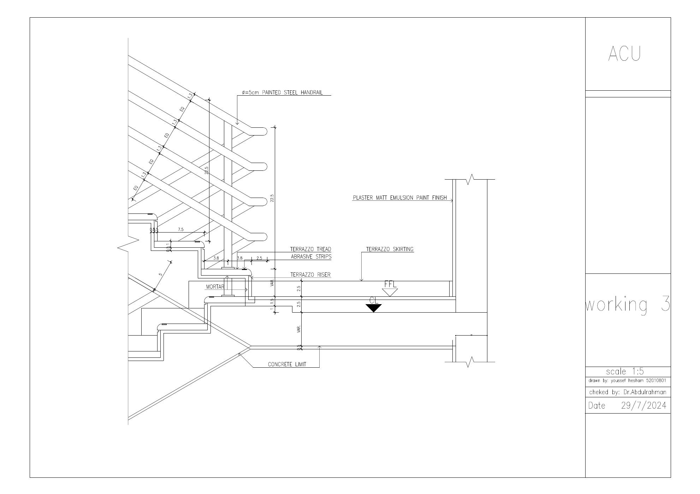

Technical Details
Staircase & Vertical Circulation Details
A focused detail package for stairs and vertical circulation, including handrail detail, terrazzo steps, stair plans, elevator plan and stair section.

Project Overview
A focused detail package for stairs and vertical circulation, including handrail detail, terrazzo steps, stair plans, elevator plan and stair section.
Scope
Stair detail, painted steel handrail, terrazzo tread/riser/skirting, abrasive strips, elevator plan and stairs section.
Gallery
Selected boards and visuals from the project package.
PDF Preview
Open the attached board directly in the browser or download it for review.